유니티,
그래픽스 프로그래밍을 배웁니다.
유니티,
그래픽스 프로그래밍을 배웁니다.
유니티,
그래픽스 프로그래밍을 배웁니다.
2021.12-2022.06
역할: VR Classroom(VR환경 교육용 소프트웨어)에서 화이트보드 기능 구현
기술스택:
Unity(C#)
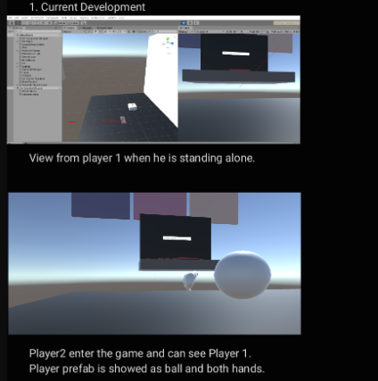
• Photon Library를 이용해 멀티플레이어 환경 구현
Unity에서 멀티플레이어 게임을 위해 Photon 환경을 setup 했습니다.
위쪽 사진은 Player1의 시점이고, 아래쪽 사진은 player2가
Player1을 바라본 시점입니다.
• VR controller를 이용해 선 그리기 기능 구현
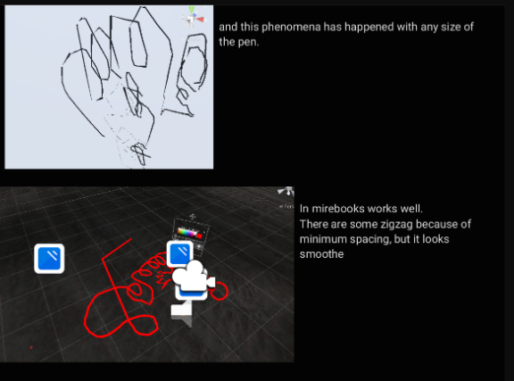
2022.07-09
역할: 한국관광공사와 협업해서 한국관광,K Food 문화를 홍보하는 월드를 만들었습니다.
기술스택:
Unity(C#), hlsl(쉐이더 작성)
• 랭킹 리더보드 제작
유저들의 게임 내 점수에 따라 랭킹 보드를 만들고 싶다는 의견에 따라 유저들의 이름, 점수, 랭크를 받아와서 게시했습니다.
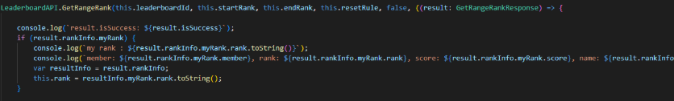
• 보트 시뮬레이션 제작
월드 중에 물 위에서 보트를 타고 싶다는 의견이 있어서, 폭포에서 보트를 타는 기능을 구현했습니다.
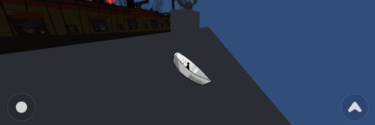
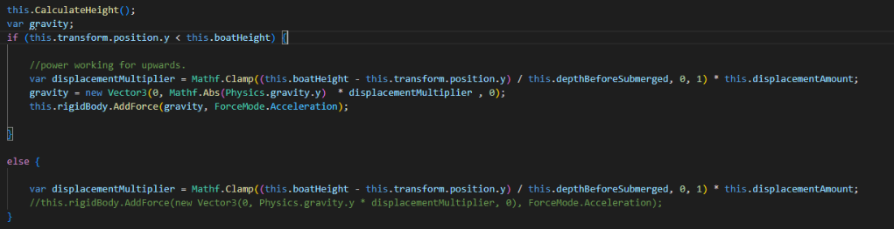
displacementMultiplier: 보트의 gravity가 얼마나 강하게 움직이는지를 결정합니다.
this.boatHeight(현재 수면의 높이) - this.transform.position(보트의 현재 높이)를 계산합니다.
보트가 수면보다 높이 있는 경우에는, 아래방향으로 보트를 움직입니다.
보트가 수면보다 낮게 있는 경우에는, 물에 잠긴 배가 떠오르듯이 위로 보트를 움직입니다.
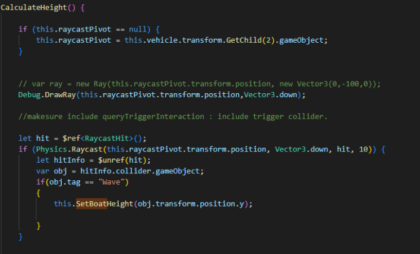
수면의 높이를 계산하는 과정입니다.
ray cast를 이용해 보트의 밑바닥에서 중력 방향으로 광선을 발사합니다.
광선이 수면과 부딪히면, 해당 수면의 높이를 새로 저장합니다.
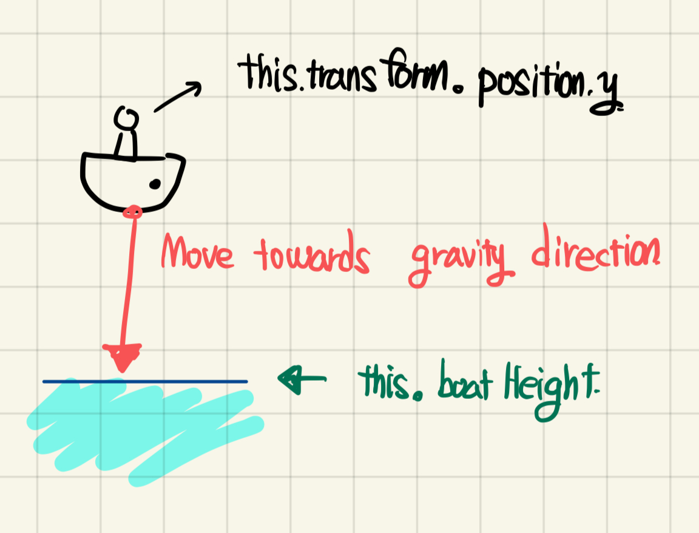
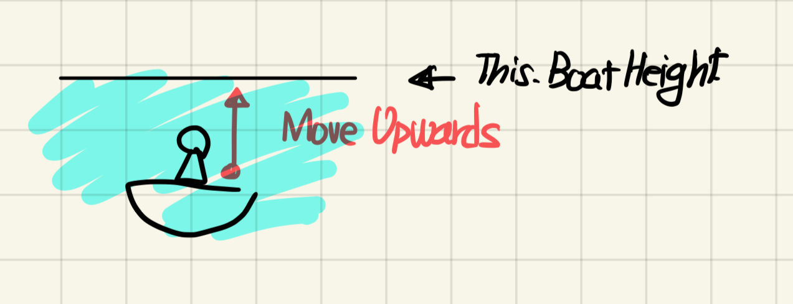
왼쪽: 보트가 수면 위인 경우-> raycasting시 수면의 높이 업데이트
오른쪽: raycasting시 hit이 되는 물체가 없으므로, 가장 최근의 수면의 높이를 사용함.
이 방식은 평면에서는 boatheight가 동일하기 때문에 큰 효과가 없지만,
폭포의 경사면에서는 계속해서 수면의 높이가 변합니다
그래서 Raycasting으로 움직일 때마다 수면의 높이를 새로 계산했습니다.
• 망원경 제작
유저의 시점을 변경해서 맵 전체를 날아가는 새의 시점에서 볼 수 있도록 만들었습니다.
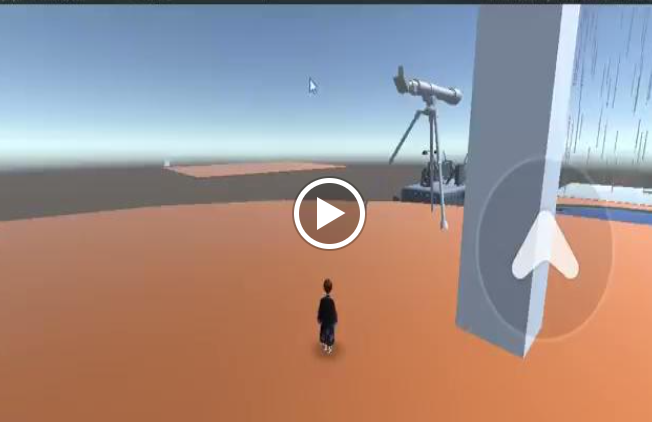
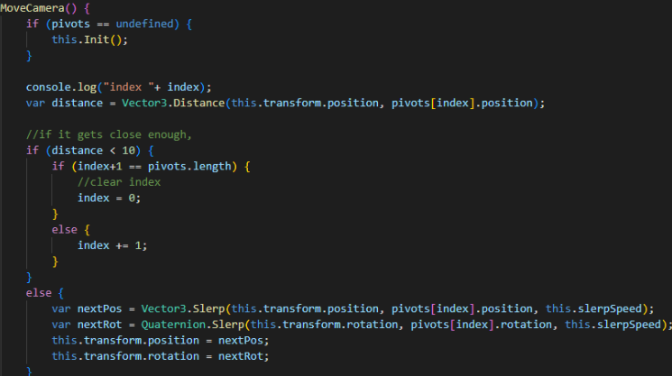
먼저, 카메라가 이동할 경로에 10개의 피벗을 지정합니다.
그리고 카메라를 0번째 피벗부터 다음 피벗까지 움직입니다
이때 카메라의 위치와 회전은 Vector3.Slerp, Quaternion.Slerp로 부드럽게 연결했습니다.
만약 Lerp를 사용하면 직선 경로로 불연속적으로 움직이기 때문에 부자연스럽습니다.
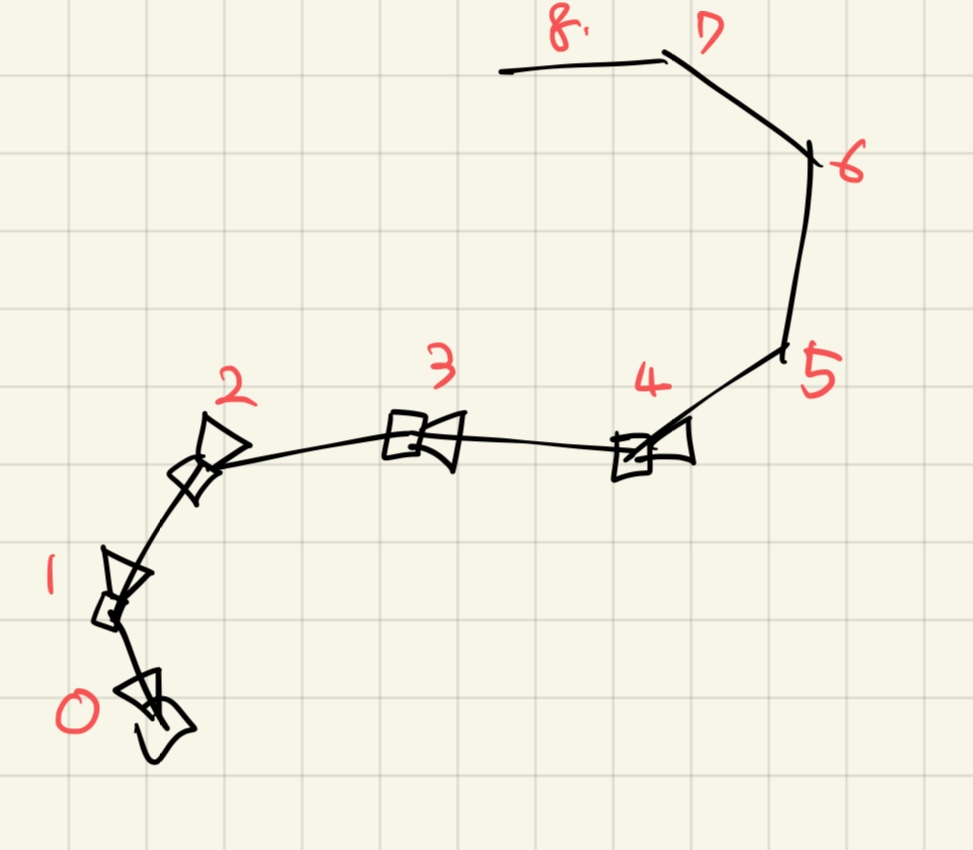
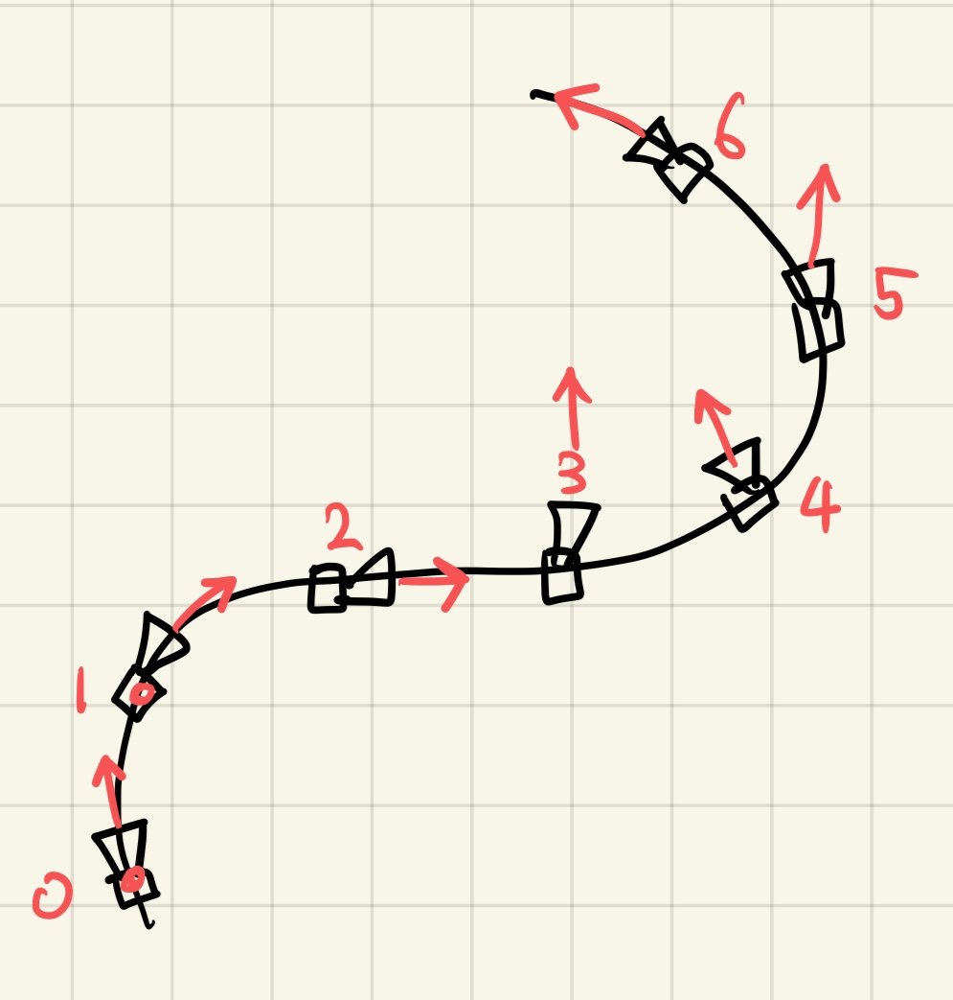
(왼쪽)Linear Interpolation으로 정의한 path
(오른쪽)Slerp(Spherical Linear Interpolation)으로 정의한 path
주기적으로 한국관광공사와 함께하는 기획회의에 참여해서, 구현가능한 아이디어를 정리했습니다.
구현이 어려운 기획안은 대안을 제시해서 본 기획의도를 살리고, 퍼포먼스 부담이 적은 쪽으로 만들었습니다.
그리고 기능별로 구현영상과 설명을 남겨서 매주 보고서를 작성했습니다.
초안이기 때문에 완성도가 높지는 않지만 핵심 기능 구현을 목표로 작업했고 기획자,디자이너,클라이언트와 함께
협업하는 첫 프로젝트였습니다.
한국관광공사 본사, 회사 본사 그리고 제가 일하던 지사가 거리가 있어서
일정이 생기는 경우에는 원격 미팅으로 회의를 대체했습니다.
회의가 끝나면 회의록을 공유하지만 프로젝트 마감이 겹치면서 본사와 지사가 소통이 잘 되지 않기 시작했습니다.
그래서 개발자 인턴끼리 회의가 끝나면 간단히 미팅을 해서 현황을 정리하고
매주 개발 현황 보고서를 작성해 기획자분들이 클라이언트와 소통하는 것을 도왔습니다.
학부 수업에서 배운 내용과, 프로젝트를 정리했습니다.
이 프로젝트에서는 모델을 렌더링하는데 필요한 여러 테크닉과 기술들을 배웁니다.
기술스택 OpenGL
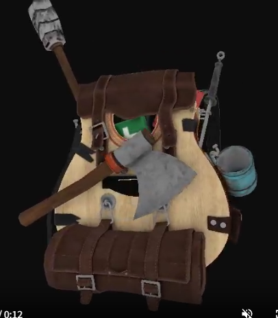
기본 텍스처를 사용해 렌더링한 모델입니다.
간단한 결과지만 vertices,indices, 그리고 texcoords를 읽어서 쉐이더 프로그램을 작성해야합니다.
openGL의 라이브러리 함수를 이용해 모델을 렌더링하는 프로그램을 만들었습니다.
space키를 누르면 모델을 중심으로 카메라가 회전하도록 만들었습니다.
WASD로 줌인,줌 아웃도 가능합니다.
Phong Lighting으로 Diffuse, Specular, Ambient Reflection을 구현했습니다.
그리고 Schlick의 Fresnel을 입혀서, 도끼의 쇠부분이 선명하게 빛나도록 만들었습니다.
이 프로젝트는 그래픽스 프로그래밍을 처음 시도한 프로젝트라, 완벽한 결과를
만들지는 못했습니다.
수강후 시간이 좀 지난 시점에 배운 것들을 정리하면서
프로젝트를 재구성한 것입니다.
간단한 모델 하나를 렌더링 하는데도
프로그램의 구성이 꽤 복잡하고, 결과가 창 하나로 나오기 때문에
이미지 1장으로 프로그램에 생긴 문제를 진단하는 것은 꽤나 어려운 일이었습니다.
완벽하지는 않더라도, 렌더링 프로세스 전반을 익히고 모델을 그리는데 필요한
여러 단계들을 복습하기에 적합한 프로젝트였습니다.
이전에 Creative Media programming 수업에서 SnowGlobe를 만들었습니다.
하지만 해당 globe에 구현된 particle collision system이 완벽하지 않았습니다.
당시 파티클 시스템을 구현할 때 동료분이 제공해주신 PPT가 이 수업의 자료였습니다.
그래서 더욱 멋진 파티클 시스템을 만들기 위해 이 수업을 신청했습니다.
해당 수업의 최종 프로젝트 결과입니다.
공 위에 천 한 장을 떨어트렸을 때 천의 움직임을 구현하는 것이 목표였습니다.